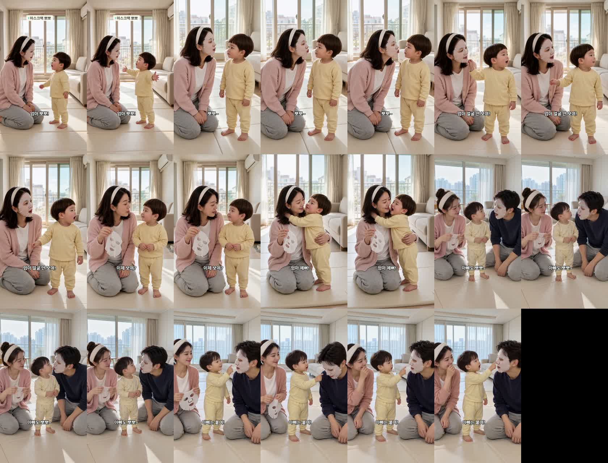

마스크팩 붙인 엄마가 뽀뽀하려 하자 두 살이 한 말
doyoon-maskpack-kiss-001 · R8 · 20.0초 · 7컷 · 원본: 인스타 @im_ju_1 «팩 붙인 엄마 때문에 뽀뽀 못해서 낑낑…»(10-10 · 좋아요 5.2만) — 영상 자막 «예쁜 살이 안 보여~» 장치
후킹
앞: 팩 붙인 엄마의 뽀뽀를 피하며 «엄마 얼굴 안 보여!» → 팩을 떼자 «엄마 예뻐!»(원본 장치 그대로 · 인스타용 귀여움)
끝: 같은 팩을 붙인 아빠에게는 «아빠는 붙여!» → 엄마 웃음, 아빠 굳음(우리 반전 · 유튜브용)
시선 고친 판 (대표님 «도윤이랑 엄마가 대사할때 계속 카메라를 보네»)
원인: 제가 배치에 «도윤이는 카메라를 향해 선다»고 써서 시작 그림이 정면이었고 H3 가 그 시선을 이어 갔습니다(검수 기록도 프레임 확인 없이 «도윤→엄마»로 적음). 배치를 «말하는 상대 쪽으로 몸·얼굴 3/4, 눈은 상대»로, 명세 7개에 «서로 얼굴을 마주 보고 눈을 맞춘다»를 넣고 시작 그림 7장·7컷을 모두 다시 뽑았습니다. 5번은 한 번 더 뽑았고, 끝에 둘이 카메라 쪽으로 고개를 돌리는 1.5초는 잘라냈습니다. 시선은 컷마다 대사 중 프레임에서 확인했습니다.
봐 주셔야 할 것
- 5번 «엄마 예뻐!» — 허브가 «초밀착 투샷에서 뽀뽀하면 두 입이 뭉개진다»고 막아서 볼 뽀뽀 대신 «목 꼭 끌어안기»로 갔습니다. 끌어안는 중에 엄마 손의 뗀 팩이 도윤이 등 쪽으로 잠깐 넘어갑니다.
- 6번 아빠 — 처음 판은 아빠가 대사 중에 실제로 도윤이 볼에 뽀뽀해 버려서 «얼굴 앞에서 멈추고 기다리기»로 다시 뽑았습니다. 아주 가까이까지 오기는 합니다.
- 썸네일 — 흰 줄 «엄마 얼굴 안 보여!» + 노란 줄 «아빠는 붙여!» · 팩 붙인 아빠를 가리키는 도윤이와 입 가리고 웃는 엄마.
제작 중 고친 것
- 3번이 첫 프레임부터 카메라가 창문 쪽으로 돌아 시작 그림에서 벗어남(닮음 0.33) → 그 장만 다시 그려(고개 돌리고 손 든 도윤이) 다시 발주.
- 5번 «kisses» 문장이 허브 «초밀착 투샷» 규칙에 걸림 → «목 꼭 끌어안기».
- 6번 아빠가 실제로 뽀뽀함 → «얼굴 바로 앞에서 멈춰 기다리기».
컷별 실측
| 컷 | 대사 | 받아쓰기 | 음높이 | 시선 |
|---|---|---|---|---|
| 1 | 도윤 «엄마 뽀뽀!» | 엄마 뽀뽀~ | 421Hz | 도윤→엄마(몸 돌려 두 팔 벌림) |
| 2 | 엄마 «뽀뽀~»(팩) | 뽀뽀~ | 276Hz | 엄마→도윤 |
| 3 | 도윤 «엄마 얼굴 안 보여!» | 엄마 얼굴 안 보여 | 372Hz | 도윤 고개 돌림·손 듦 |
| 4 | 엄마 «이제 보여?»(뗀 팩) | 이제 보여? | 192Hz | 엄마→도윤 |
| 5 | 도윤 «엄마 예뻐!» | 엄마 예뻐 | 337Hz | 도윤→엄마(끌어안음) |
| 6 | 아빠 «아빠도 뽀뽀~»(팩) | 아빠도 뽀뽀~ | 135Hz | 아빠→도윤 |
| 7 | 도윤 «아빠는 붙여!» | 아빠는 붙여 | 386Hz | 도윤→아빠(팩 가리킴) |
D6 시작 그림 이탈·컷 안 튐 검사 7컷 통과 · D8 통과 · H3 18회(약 $1.8)
썸네일 (세 화면)

완성본 1초 간격
